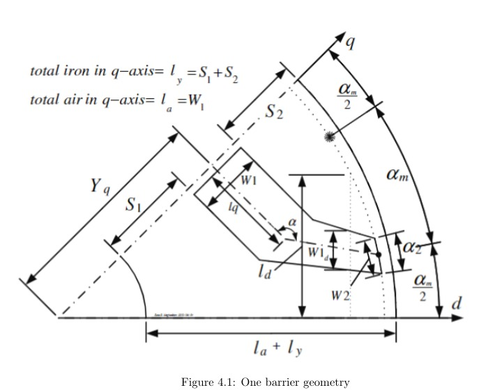

PROJECT 0012024
Wind Turbine Design for Highway Energy Harvesting
Literature-driven aerodynamic design and fabrication of a Savonius vertical-axis wind turbine concept for harvesting airflow near highways.
View project →Filter by technical area or search the project summaries. More filters can be added as the archive grows.
Literature-driven aerodynamic design and fabrication of a Savonius vertical-axis wind turbine concept for harvesting airflow near highways.
View project →
A lab-scale pipeline monitoring concept combining in-pipe energy harvesting, pressure sensing, Arduino control and LTE-based remote data transmission.
View project →
Analytical study of SynRM machine design, magnetic saliency, TLA rotor flux-barrier geometry and FEM-based optimization principles.
View project →No projects match that filter or search yet.